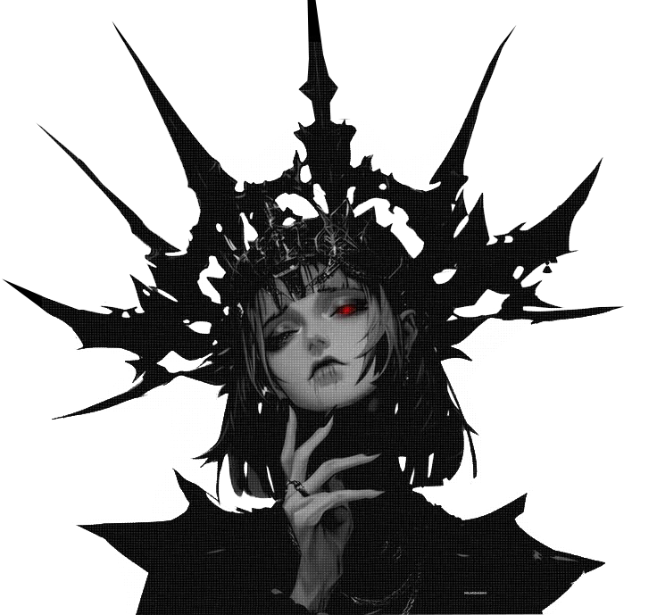

NOTHINGNESS

有什
i see your shape within to find and lose again to stray in the dark to let my heart explode


IN.VEINS Krigstid un.bon.souvenir
●
●
●
✦
●
●
●
●●
BRILLANT
Au détour d'une rue, j'attraperai ta main
Pour te montrer les lumières bleues
Et verse l'ombre fuyante
Au détour d'une rue, j'attraperai ta main
○
Pour ne plus la lâcher
Et qu'ensemble nous courrions
Comme des fous dans les sombres allées
✝✝
THE EVANGELIST

►►►
Nothingness
to hear a thousand screams to drown inside my dreams every time i close my eyes i see your shape within to find and lose again to stray in the dark to let my heart explode I can't let go